| Артефакт |
Описание |
|
| Как я уже писал выше, это наш ключик к успешным гангам. Стоит 50 золота, не забывайте про него. |

| Стоит 65 золота, окупится. |
|
| Ботл нужен, как воздух, если мы в миде. А вот не мидовому пуджу ботл не нужен: имейте совесть,
помогайте контролировать руны своему мидеру, а не воруйте их. |
|
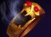
| 150 хп переводит в 150 мп на 10 секунд, слишком маленький интервал. Пудж - рыбак, надо иметь
терпение и не бояться промазать. Зато с этим артефактом легко делать суицид :) |
|
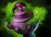
| 875 слишком дорого, берем на сдачу после хорошего замеса. Лучше оставить этот артефакт сапортам.
|
|
| Это основа гайда, их собираем по-любому. |
|
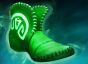
| Берем, если все плохо или нормально, но свои мы разобрали для или

|

| Берем, если все очень хорошо, обычно их покупают, если надо тоскать с собой 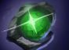 ,
который надо сейвить, поэтому без телепорта ходить нельзя. |
|
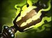
| Ситуативный предмет, берем против физ. дпсеров, позже загрейдим до 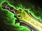 . |
|
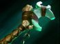
| Респект. Удачная комбинация + выглядит
эпично,
вам частенько будут лайк
за это ставить ;) |
|
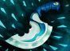
| Пудж, играющий без дагера, достоин уважение. Почему? Потому что это самый сильный артефакт для него,
в подтверждение тому многолетний запрет на покупку этого артефакта. Лично я покупаю только против
неуловимых героев. |

| Второй по силе артефакт на  Pudge после
. Позволяет наносить
500 чистого
урона каждые 4 секунды. Имба. Комбинация + Pudge после
. Позволяет наносить
500 чистого
урона каждые 4 секунды. Имба. Комбинация +
 + +
-
это фраг в большинстве случаев. + +
-
это фраг в большинстве случаев.
|
|
| Один из самых сильных артефактов для нас. Очень советую против назойливого 
|
|
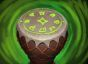
| Сапорт артефакт, имеет место быть. |
|
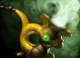
| Ключевой артефакт против прокаст-пика соперника, получим 58% сопротивления к магии. Шикарно.
Ускоряет наш фарм с помощью Rot, дамажим
себя
меньше, регенерируем быстро. |
|
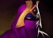
| Можно брать, дает мп, броню и увеличение магического урона. То, что доктор прописал! Учтите, вейл не
увеличивает урон от , потому что хук имеет
чистый урон, а не магический. |
|
| Очень хороший артефакт для нас, берем после аркан(разбираем), если есть желание. |
|
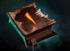
| Берем только под пуш стратегию, нам они больше мешают, чем помогают... |
|
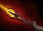
| Берем, если играем по фанчику и все у нас получается. Особо загнобленных соперников можно убивать
прямо во время полета на хуке. |
|
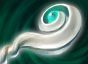
| Универсальный артефакт. Можно нападать, можно засейвиться или засейвить союзника. Зависит о вашего
скила и желаний. |
|
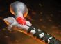
| Самый недооцененный артефакт, дает нам 30 интеллекта и 330 здоровья, а так же замедление 60% на
расстоянии 1200(1400 с линзой) с кулдауном в 10 секунд. Это прямая контра , с
огромной ренджи сбиваем линку и охотимся на всяких  и т.п. и т.п.
|
|
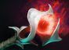
| Не очень хорошо сидит на пудже, но почему бы и нет? |

| Сидит отлично на всех персонажах, хекс он и в африке хекс. |
|
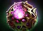
| Берем только если все очень хорошо и у нас есть . На крайний случай будем переводить
наше хп в урон по соперникам путем возвратки. |
|
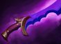
| Берем по фану или против героев, которым надо выключать пассивки. Прикольно бегать в инвизе под
и травить соперника. Забавно.
|

| Имеет место быть, дополнительный контроль в бкб. В лейте может порешать. |

| Иногда может зайти очень хорошо, но по большей части игнорируем этот артефакт. |
|
| Берем против  и и  , они будут нас проклинать за это! :) , они будут нас проклинать за это! :)
|
|
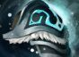
| Решает проблемы с МП и Броней, хороший артефакт для нас и для команды. Можно использовать во время
ульты. |
|
| Решает проблемы с  , ,  , ,  и т.п. По ситуации. и т.п. По ситуации. |
|
| Артефакт, который должен быть у пуджа-танка. |
|
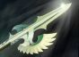
| Отлично заходит против тех, кто разносит вашу команду за пару тычек. |
|
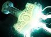
| Нас больше интересует активная способность мьельнира, если дойдет до дэфа мегакрипов - вспоминаем,
покупаем. |

 и 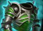 Поэтому стадию
мидгейма мы должны проводить очень
активно, учавствовать во всех гангах и вылазках. Помните, бонусная сила дается за смерть врага в
радиусе 450.
и 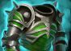 Поэтому стадию
мидгейма мы должны проводить очень
активно, учавствовать во всех гангах и вылазках. Помните, бонусная сила дается за смерть врага в
радиусе 450.


 и
герои-еда
и
герои-еда 

 . В первом случае надо хукать и прожимать ульту сразу на
цель, еще до того, как хук попадет. Во втором случае не надо сразу ультовать, сначала ударьте 1-2
раза свою жертву, пока та не выкупила, что происходит, а потом жрите!
. В первом случае надо хукать и прожимать ульту сразу на
цель, еще до того, как хук попадет. Во втором случае не надо сразу ультовать, сначала ударьте 1-2
раза свою жертву, пока та не выкупила, что происходит, а потом жрите!
 Town Portal Scroll, только если враги дайвят под
тавер, и мы видим, что можем сделать фраг с большой вероятностью. В общем, в начале игры мы не
создаём
моменты, а ждем ошибок врага.
Town Portal Scroll, только если враги дайвят под
тавер, и мы видим, что можем сделать фраг с большой вероятностью. В общем, в начале игры мы не
создаём
моменты, а ждем ошибок врага.